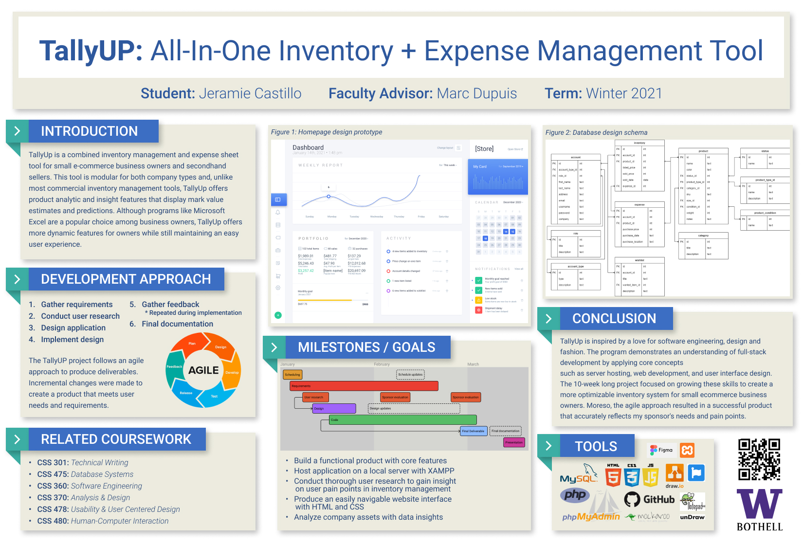

Division of Computing & Software Systems
March 19, 2021
Jeramie Castillo
TalluUP: All-In-One Inventory + Expense Management Tool
Individual Project-Student Defined
Advisor: Dr. Marc Dupius
Abstract

View full-sized poster